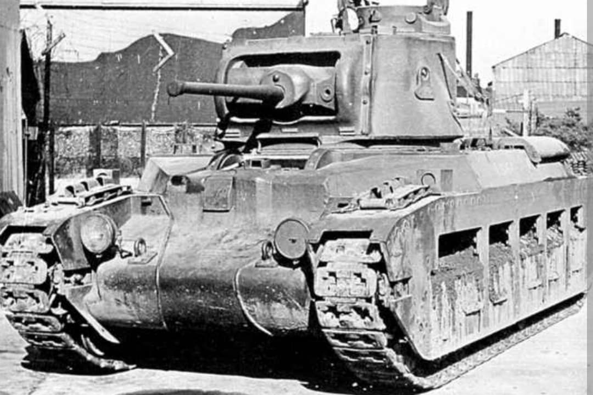
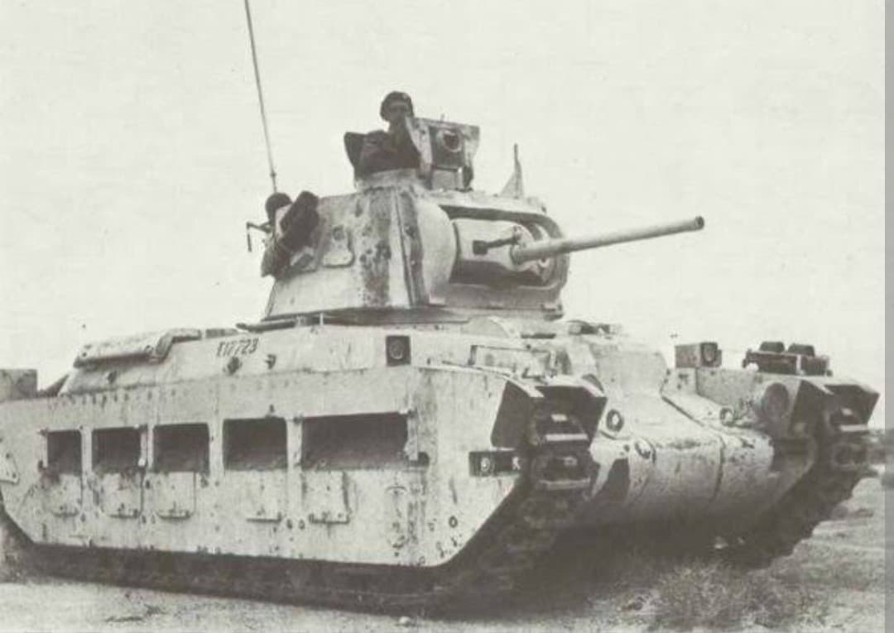
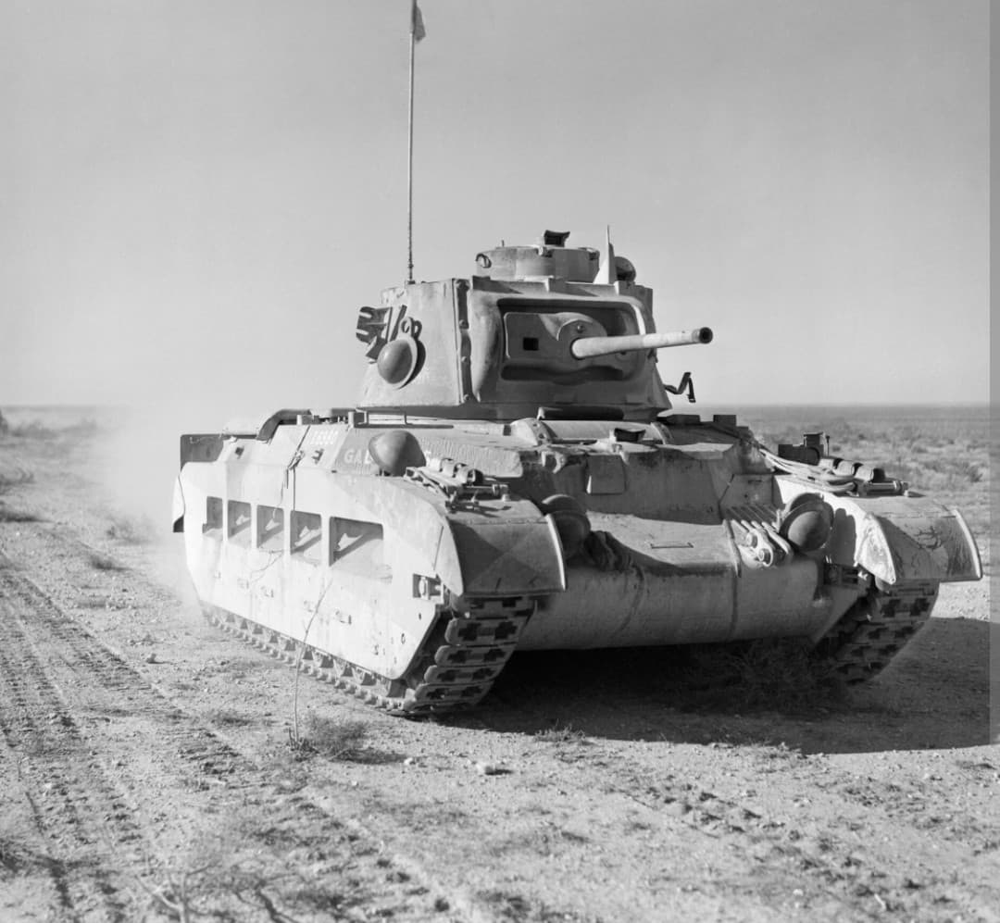

Le char d'infanterie au blindage autrefois impénétrable des campagnes de France et d'Afrique du Nord

Le **Matilda II** (officiellement Infantry Tank Mark II A12) est un char d'infanterie britannique conçu à la fin des années 1930.
Pensé selon la doctrine britannique d'accompagnement lent de la troupe, le Matilda II compensait sa faible vitesse par un blindage extrêmement épais pour l'époque. Au début du conflit, il s'est imposé comme l'un des chars les plus redoutables et difficiles à détruire du champ de bataille.
Développé par la **Vulcan Foundry**, le Matilda II pesait environ **25 tonnes**. Il tirait sa puissance de deux moteurs diesel couplés (AEC ou Leyland) développant environ 174 chevaux, ce qui limitait sa vitesse maximale à seulement **24 km/h sur route** et environ 15 km/h en tout-terrain.
Son atout majeur résidait dans son blindage frontal impressionnant atteignant **78 mm**, rendant le char quasi invulnérable aux canons antichars standards allemands (3,7-cm PaK 36) et italiens de 1940. Son armement principal consistait en un canon **QF 2-pounder (40 mm)** couplé à une mitrailleuse Besa de 7,92 mm.

En mai 1940, lors de la bataille de France, la contre-attaque britannique à **Arras** menée par les Matilda traumatisa les forces allemandes : seuls les canons antiaériens de 88 mm utilisés en tir direct réussirent à stopper leur progression.
C'est toutefois durant la guerre du Désert en Afrique du Nord (1940-1941) que le Matilda gagna son surnom de **« Reine du Désert »**. Il surclassa largement les blindés italiens lors de l'Opération Compass avant de faire face aux forces du *Afrika Korps* d'Rommel.

Produit à près de **3 000 exemplaires** entre 1937 et 1943, le Matilda II fut progressivement retiré des lignes de front européennes à mesure que le canon de 2 livres devenait obsolète et que les canons de 88 mm allemands se généralisaient.
Fourni à l'Armée rouge via le Prêt-Bail, il fut également réutilisé par les forces australiennes dans la guerre du Pacifique (Nouvelle-Guinée, Bornéo), où son blindage lourd et ses variantes démineuses ou lance-flammes (*Matilda Frog*) se révélèrent très efficaces contre les positions japonaises.
Page du Musée HOP WW2 – Section Véhicules Terrestres Britanniques